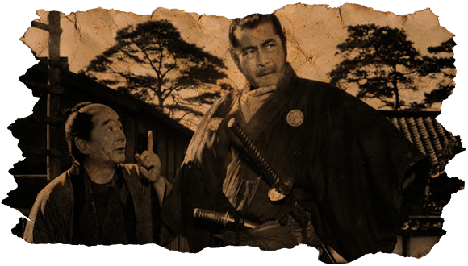

Da inicio la asamblea en Shizuoka: tensión entre las facciones
El mundo se estremece por lo que sucede en Shizuoka. Desde una punta a otra, el mar de Japón se sacude. Las fuerzas del emperador de Akishino son desconocidas. Sus divisiones de ashigaru se han asentado en las proximidades de la prefectura de Shizuoka, y el señor de la prefectura se ha mostrado cada vez más intranquilo.

Pero se ha revelado a través de fuentes desconocidas (presumidos mensajeros en las postas y exploradores errantes) que el clan Minamoto está esperando a las fuerzas del clan Taira para hacerles frente en la orilla del río que divide la prefectura al oeste.
Tampoco hay mucha información al respecto de las fuerzas con las que cuenta el clan rebelde, pero solo se sabe que Kamakura ha caído bajo su influencia y que Nagato habría firmado un documento con el diplomático del clan, Soga no Hideyoshi, el último descendiente de la tradicional familia de los Soga.
Los detalles del documento son poco conocidos, ya que fueron contados quienes pudieron acceder a la lectura del documento. No obstante, se especula con un tratado de amistad entre la facción rebelde y el señor Nagato. A esto se le suma el apoyo ya conocido del clan Fujiwara, y de un misterioso grupo chino que habría cruzado el océano para apoyar los movimientos de rebelión al interior de Japón.
Otros informes de pueblerinos apuntan a que el mismísimo líder de los Minamoto se ha hecho presente desde hace solo unos momentos, por lo cual había estado ausente durante el tenso momento que se vivió en estos pagos desde hace varios días.
Por su parte, no ha dejado de llamar la atención la presencia del caudillo Kato Harima entre las filas de los Minamoto, con quien hacía poco se había declarado en enemistad. Los comentarios apuntan que llegó escoltado por un rurouni mal vestido. Según los lugareños, probablemente se trate de un bushi, aunque algunos apuntan a que sería un samurai. Los samurai son un fenómeno cada vez más frecuente en Japón. Espadachines que no tienen ningún respeto por la investidura del emperador, y solo viven para hacer servicios personales, por la lealtad a un cabecilla o para regar la tierra de sangre sin más.
En diálogo con una de nuestras fuentes, hemos podido conseguir unas breves pero interesantes palabras del diplomático del clan, quien se prestó a hablar de los preparativos bélicos, algo poco común por el hermetismo con el que se maneja todo en estos tiempos. En diálogo con Soga no Hideyoshi, esto afirmaba:
“Es de público conocimiento que estamos en abierta rebelión contra la tiranía de Akishino y la familia de su consorte. Los Minamoto representamos al pueblo de Japón, al humilde agricultor de arroz, al bebedor de sake, al bushi, al samurai, al humilde practicante del sintoísmo y al budista también. Los Taira solo cobran peajes y demandan el pago en especies, hundiendo al pueblo en la miseria con sus exigencias tributarias. Con Takeda esto se terminará, el pueblo es Takeda, Takeda es el pueblo”.
Algunos han calificado las palabras del diplomático de “populista”, lo cierto, es que el pueblo de Shizuoka se ha manifestado en favor de los rebeldes, y esta efervescencia popular empieza a notarse en otras prefecturas, donde el nombre del último de los Minamoto empieza a cobrar un simbolismo muy particular.